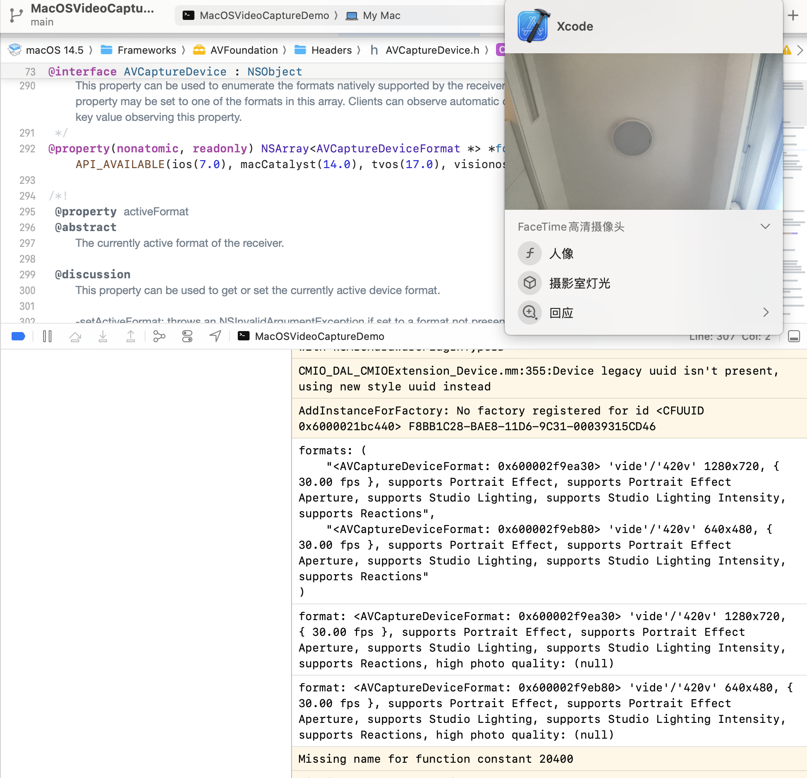

AVFoundation 是苹果公司开发的一套音频和视频框架，用于 macOS、iOS、watchOS 和 tvOS 平台。它提供了一整套用于处理多媒体数据的 API，允许开发者创建、编辑和播放音频和视频内容。通过使用 AVFoundation，开发者可以创建功能丰富的多媒体应用，例如视频播放器、音频录制应用、实时流媒体应用和视频编辑器等。它是苹果生态系统中处理多媒体数据的核心工具之一。
以下是 AVFoundation 的一些关键特性和组件：
AVCaptureSession：管理输入和输出的数据流。
AVCaptureDevice：表示视频输入设备，例如摄像头。
AVCaptureDeviceInput：将视频输入设备连接到会话中。
AVCaptureVideoDataOutput：处理从设备获得的视频帧数据。
AVCaptureVideoPreviewLayer：用于显示摄像头捕获的实时视频。
AVCaptureVideoDataOutputSampleBufferDelegate: protocol，Methods for receiving sample buffers from, and monitoring the status of, a video data output.
注意下，objective-C中，interface 继承 protocol 不能加 instance variables。
这个类是用来记录一些设备属性的。比如isVideoStablizationModeSupported（这个功能适合ios/ipad，以及借用这两种设备摄像头的macos/tvos）。
打印出来看下：
for (AVCaptureDeviceFormat *format in device.formats) {
NSLog(@"format: %@", format);
}
关于formats和activeformat:
@property(nonatomic, readonly) NSArray<AVCaptureDeviceFormat *> *formats API_AVAILABLE(ios(7.0), macCatalyst(14.0), tvos(17.0), visionos(1.0));
//
// main.m
// MacOSVideoCaptureDemo
//
#import <Foundation/Foundation.h>
#import <AVFoundation/AVFoundation.h>
static int total_frames_cnt = 0;
// 声明一个类，符合 AVCaptureVideoDataOutputSampleBufferDelegate 协议
@interface VideoProcessor : NSObject <AVCaptureVideoDataOutputSampleBufferDelegate>
@end
@implementation VideoProcessor
// 实现代理方法，处理每一帧视频数据
- (void)captureOutput:(AVCaptureOutput *)output
didOutputSampleBuffer:(CMSampleBufferRef)sampleBuffer
fromConnection:(AVCaptureConnection *)connection {
// 这里可以对 sampleBuffer 进行处理
// NSLog(@"Captured a frame. %d", total_frames_cnt++);
}
@end
int main(int argc, const char * argv[]) {
@autoreleasepool {
// 创建 AVCaptureSession 实例
AVCaptureSession *session = [[AVCaptureSession alloc] init];
// 获取默认的摄像头设备
AVCaptureDevice *device = [AVCaptureDevice defaultDeviceWithMediaType:AVMediaTypeVideo];
if (device) {
NSError *error = nil;
// 创建并添加视频输入
AVCaptureDeviceInput *input = [AVCaptureDeviceInput deviceInputWithDevice:device error:&error];
if ([session canAddInput:input]) {
[session addInput:input];
} else {
NSLog(@"Failed to add input: %@", error);
return 1;
}
// 创建并添加视频输出
AVCaptureVideoDataOutput *output = [[AVCaptureVideoDataOutput alloc] init];
VideoProcessor *processor = [[VideoProcessor alloc] init];
[output setSampleBufferDelegate:processor queue:dispatch_get_main_queue()];
if ([session canAddOutput:output]) {
[session addOutput:output];
} else {
NSLog(@"Failed to add output.");
return 1;
}
NSLog(@"formats: %@", device.formats);
for (AVCaptureDeviceFormat *format in device.formats) {
BOOL isHighPhotoQualitySupported = [format isHighPhotoQualitySupported];
NSLog(@"format: %@, high photo quality: %@", format, isHighPhotoQualitySupported);
}
// 配置 session
session.sessionPreset = AVCaptureSessionPresetHigh;
// 启动 session
[session startRunning];
// 运行一个无限循环，保持程序运行
[[NSRunLoop currentRunLoop] run];
} else {
NSLog(@"No camera device found.");
return 1;
}
}
return 0;
}
效果：
